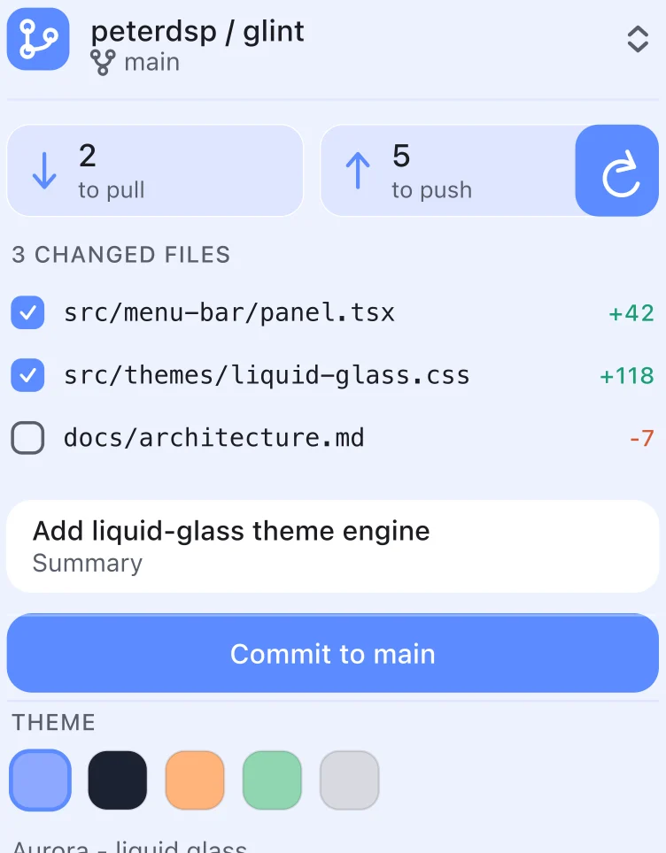
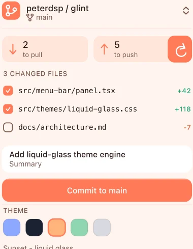
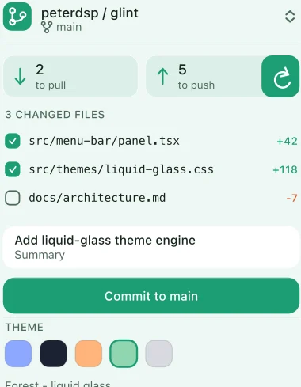
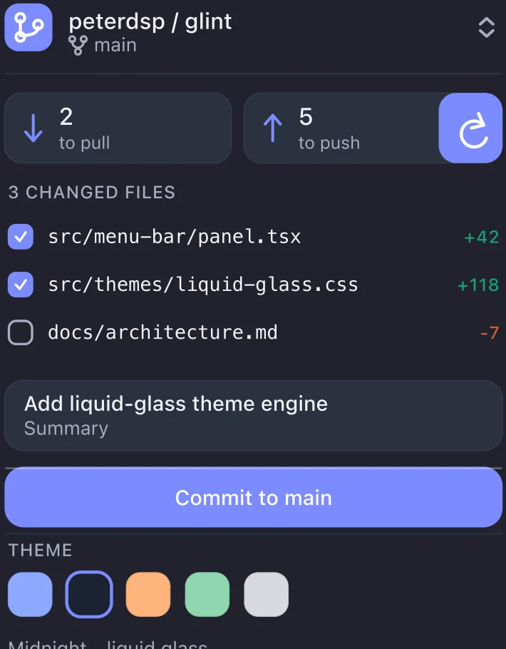
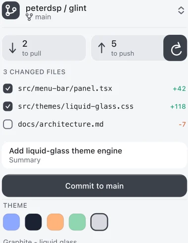
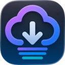
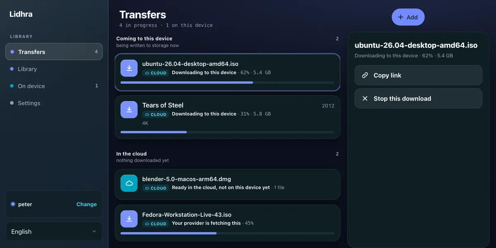

Glint
Git, one click from the menu bar.
Glint is a small Git client for the Mac menu bar. Click its icon to stage, commit, pull or push, and the panel gets out of your way.



Try the panel
The same layout Glint drops from your menu bar. Stage a file, change the theme, then press sync.
On your Mac it opens from the Glint icon and closes when you click away.
src/menu-bar/panel.tsx+42src/themes/liquid-glass.css+118docs/architecture.md-7
panel.tsx
liquid-glass.css
architecture.md
Small on purpose
6 MB
The whole app. A Rust core on the system WebKit, no bundled Chromium, about 40 MB of memory.
- Diff pop-out for any file
- Pull request and CI status
- Signed background updates
- English, Greek and Albanian

Real macOS vibrancy sits behind the panel, so it is glass, not a grey box.
No account and no telemetry. Point it at a local repository and you are set up.
Live from GitHub
Real public Git events, streaming right now
Public Git events from GitHub's API appear here as they happen.
A theme is a few colour tokens in a file. Drop one in and it becomes a swatch.
I wanted the everyday Git actions one click away, then gone.
Buy it once |
Ko-fi$2.99 one-time | Mac App Store$4.99 one-time |
|---|---|---|
| Free trial | 7 days, every feature | Not offered |
| Updates | Automatic, in the background | Through the App Store |
| Purchase | Licence key by email | Your Apple account |
| Runs on | macOS 12 or later, Apple silicon and Intel | macOS 12 or later, Apple silicon and Intel |
| Sandbox | Not sandboxed | Sandboxed by Apple |
| The same app either way. Nothing recurring. | Get a licence, $2.99 | Get it on the App Store |
Questions
Can your home handle it all at once?
Measure download, upload, ping and jitter in your browser over Cloudflare, then see what your connection can run.
Runs in your browser - uses roughly 100-200 MB of data.
Scenario ratings are guidance, not guarantees.

Try Glint free for a week
Every feature, no account, no card. macOS 12 or later, Apple silicon and Intel.
The debrid download manager for iPhone, Mac and Apple TV
Paste a magnet or a link and Lidhra fetches it through Real-Debrid, AllDebrid, TorBox or six other services, then downloads it natively and resumes where it stopped. Finished files wait in a library, ready to play or cast to a TV.

Lidhra for iPhone, iPad, Mac, Apple TV and Vision Pro
One purchase, no subscription.
